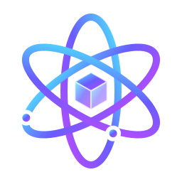
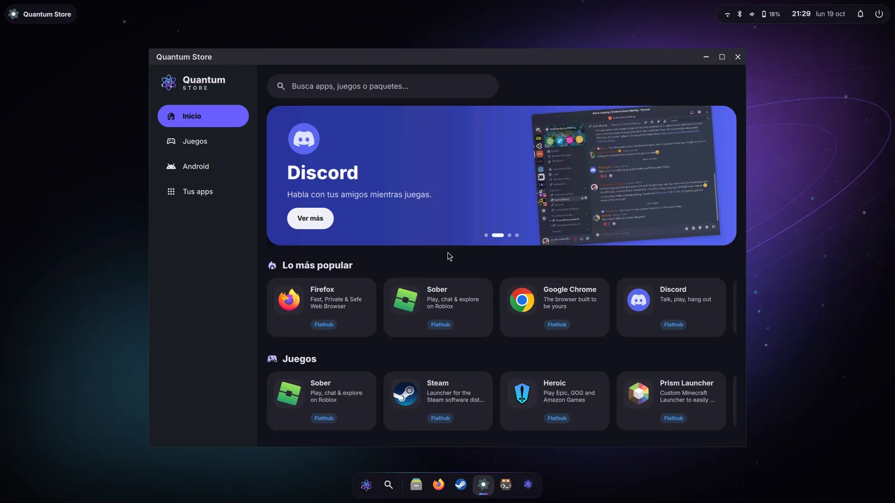
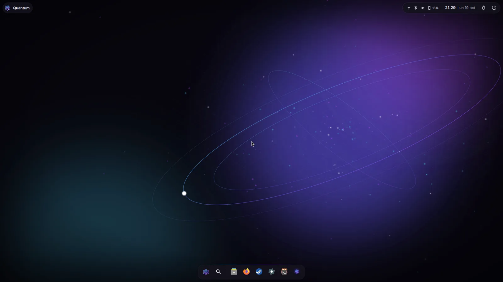
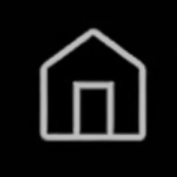

Hecho para jugar
Steam con Proton viene listo, más el kernel Zen, un modo juego que quita distracciones y los FPS en pantalla con MangoHud.
Bienvenido a Quantum Linux
Como Windows, pero mejor.
Hecho con la comunidad.

Quantum Linux DescargarComo Windows, pero mejor. Hecho con la comunidad.
Una distro basada en Arch Linux, gratis y sin anuncios, pensada para quienes vienen de Windows. Instala, juega y personaliza sin pelear con tu PC.
ISO de 3,7 GB · 64 bits · Sin cuentas ni registros

Todo lo bueno de Linux, sin la parte difícil.
Steam con Proton viene listo, más el kernel Zen, un modo juego que quita distracciones y los FPS en pantalla con MangoHud.
Barra de tareas abajo, menú Inicio, botones de minimizar y maximizar, Alt+Tab y Win+E. Y una guía «Vengo de Windows» dentro del sistema.
Una sola tienda para todo: los repos de Arch, Flathub y AUR (la comunidad). Buscas, haces clic y listo.
Modo claro u oscuro, fondos y colores que se adaptan a tu fondo de pantalla en todo el sistema. Sin reiniciar nada.
Nada de publicidad en el menú, ni apps «sugeridas», ni reinicios forzados. Las actualizaciones las decides tú.
Una sola biblioteca para Steam, Epic, GOG, Amazon y tus juegos instalados, con portadas grandes y un botón Jugar. Instala Proton-GE con un clic.
Haz doble clic en un .exe y Quantum lo abre con Wine. Si existe una versión para Linux, te ayuda a encontrarla en la Store.
Un interruptor activa paquetes optimizados para tu procesador (de CachyOS) y un planificador pensado para juegos. Se desactiva igual de fácil.
Antes de cada actualización se guarda una instantánea del sistema (Btrfs + Snapper). Si algo sale mal, eliges la anterior al arrancar.
Capturas reales de Quantum Linux 1.0.

El escritorio limpio, con la barra de tareas flotante abajo.
| Windows 11 | Quantum Linux | |
|---|---|---|
| Precio | Licencia de pago | check_circleGratis |
| Anuncios y apps sugeridas | Sí, en el menú Inicio | check_circleNinguno |
| Pide TPM 2.0 y CPU reciente | Sí | check_circleNo |
| Reinicios por actualizaciones | Automáticos | check_circleCuando tú quieras |
| Cuenta obligatoria al instalar | Cuenta de Microsoft | check_circleNo |
| Código abierto | No | check_circleSí |
Baja el ISO de Quantum Linux (3,7 GB).
Usa Ventoy, balenaEtcher o Rufus con un USB de 8 GB o más.
Inicia el PC desde el USB, pruébalo sin instalar y luego pulsa «Instalar Quantum».
x86_64 · Arch Linux · Kernel Zen · Quantum Shell
SHA256: 2625523ec36dbce3873347fd24ebdcc84adb22b7279187c455f17a76c3a1d419
Antes de instalar, respalda tus archivos importantes.
Abre «Pasar a Quantum» en Windows, copia tus archivos, tu foto, tu fondo, tus redes Wi-Fi, tus favoritos y tus juegos de Steam a un pendrive, y conéctalo en Quantum: se acomoda todo solo.
Descomprime el zip en el pendrive y haz doble clic en «Pasar a Quantum». Si Windows dice «Windows protegió tu PC», toca «Más información» y luego «Ejecutar de todas formas».
Sí. Con «Pasar a Quantum» copias en Windows tus archivos, tu foto, tu fondo, tus redes Wi-Fi, tus favoritos y tus juegos de Steam a un pendrive. Al conectarlo en Quantum, todo va a su lugar. Lo descargas arriba, junto al ISO.
Sí. Quantum Linux es gratis y de código abierto. No hay versión de pago, ni suscripciones, ni anuncios.
Muchísimos sí, gracias a Steam y Proton. Algunos juegos con antitrampas (como Valorant) todavía no funcionan en Linux. Puedes revisar cada juego en ProtonDB.
No. Instalas apps desde Quantum Store, cambias ajustes desde el Centro Quantum y actualizas con un botón.
Sí. Al arrancar desde el USB entras a una sesión de prueba completa; nada cambia en tu PC hasta que pulsas «Instalar Quantum».
Es el nombre clave de la versión 1.0. Los quarks son las partículas que forman casi toda la materia, y cada versión de Quantum llevará el nombre de una partícula.
Quantum Linux existe gracias a estas personas.
Idea, diseño y desarrollo de Quantum Linux.
Primer colaborador oficial. Creó el Discord de Quantum y ayuda en todo lo que haga falta.

Mejoró esta página: modo oscuro, animaciones y una versión más cómoda para celular.
Y a todos los que comentan, prueban y comparten. Cada idea que dejan en TikTok ayuda a decidir qué llega en la próxima versión.
¿Quieres colaborar? Únete al Discord de Quantum.
Cada día publico cómo voy creando Quantum Linux.